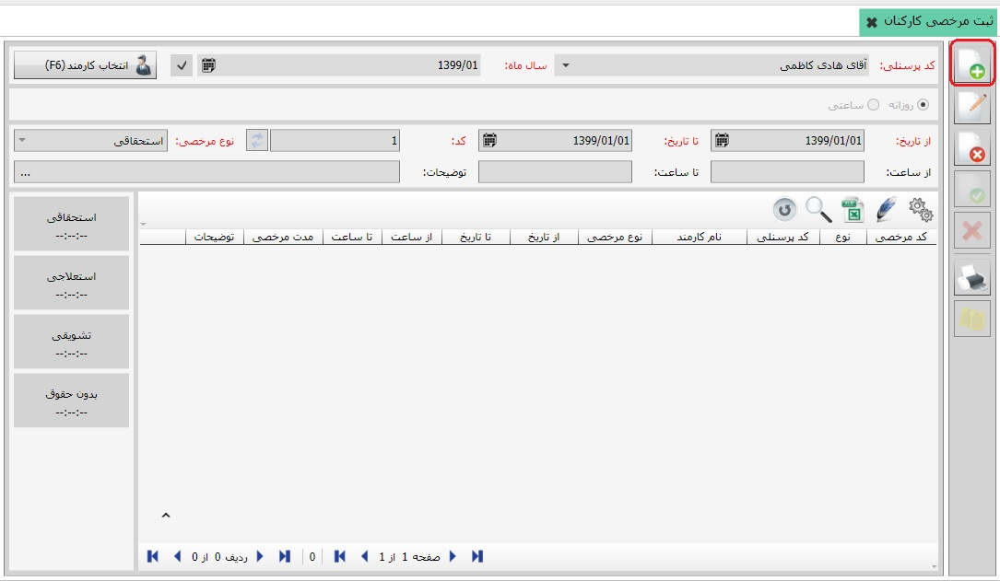

در این قسمت می توانید مرخصی کارکنان را ثبت کنید، اگر بر روی منوی ثبت مرخصی کارکنان کلیک کنید تصویر زیر نمایان می شود:

در تصویر بالا در کادر قرمز رنگ فیلد کد پرسنلی و ماه سال را تعیین کنید سپس بر روی کلید تایید و مشاهده کلیک نمایید:
حالا می توانید با استفاده از کلید ایجاد مرخصی جدید که با کادر قرمز رنگ در تصویر بالا مشخص شده ، برای شخص مورد نظرتان مرخصی ثبت کنید.